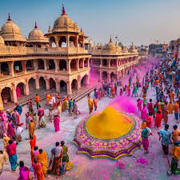

Festival
Diwali
Diwali, also known as the Festival of Lights, is one of the most significant and widely celebrated festivals in India. It marks the victory of light over darkness and good over evil. Celebrated by Hindus, Sikhs, Jains, and Buddhists, Diwali typically spans five days, with the main celebration falling on the third day, which coincides with the new moon During Diwali, homes and public spaces are decorated with oil lamps (diyas), candles, and colorful rangoli designs. .
Holi
Holi, the Festival of Colors, is a vibrant and joyous celebration marking the arrival of spring and the victory of good over evil. Celebrated primarily by Hindus, it involves people throwing colored powders at each other, dancing, singing, and enjoying festive foods like gujiya. The festival commemorates various legends, including the story of Prahlad's devotion to Lord Vishnu and the burning of the demoness Holika.
RAKSHA BANDHAN
Raksha Bandhan, commonly known as Rakhi, is a cherished Hindu festival celebrating the bond between brothers and sisters. It typically falls in August on the full moon day of the Hindu month of Shravana. During this festival, sisters tie a sacred thread, or rakhi, around their brothers' wrists, symbolizing their love and protection. In return, brothers give gifts and pledge to protect their sisters. This ritual reinforces the family bond and mutual respect among siblings. Raksha Bandhan transcends biological relationships, as friends and extended family members also participate, emphasizing the values of love, protection, and unity. 🎉🌸